CLAUDE’S PICK
Elasticsearch: 에이전트 메모리를 위한 3인덱스 하이브리드 검색 아키텍처


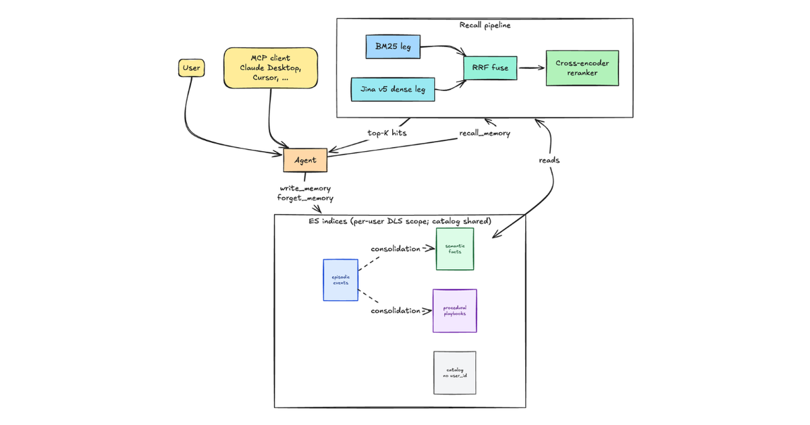
LLM 에이전트는 컨텍스트 윈도우 제한과 lost-in-the-middle 효과로 인해 장기적 사용자 이력을 효과적으로 활용하지 못한다. Elasticsearch 기반 영구 메모리 시스템은 3개 인덱스 구조, 하이브리드 검색, 리랭킹, 초대화 및 DLS 격리를 통해 세션을 넘는 지속적 메모리를 제공한다. 복수 테넌트 간 데이터 누출 방지(R@10 0.89)와 비용 및 지연 감소를 실현한다.
핵심 포인트: 핵심 기여: 3인덱스 아키텍처로 에피소드 이벤트, 의미론적 기억, 의사 결정 추적을 분리 관리하며, 하이브리드 검색과 크로스-인코더 리랭킹으로 R@10 0.89 달성 및 테넌트 간 완전한 격리 보장.
🔗 elastic.co/search-labs/blog/agent-memory…
기타 (Others)
LLM Wiki — 문서를 자동으로 위키화하는 LLM 기반 지식 관리 앱
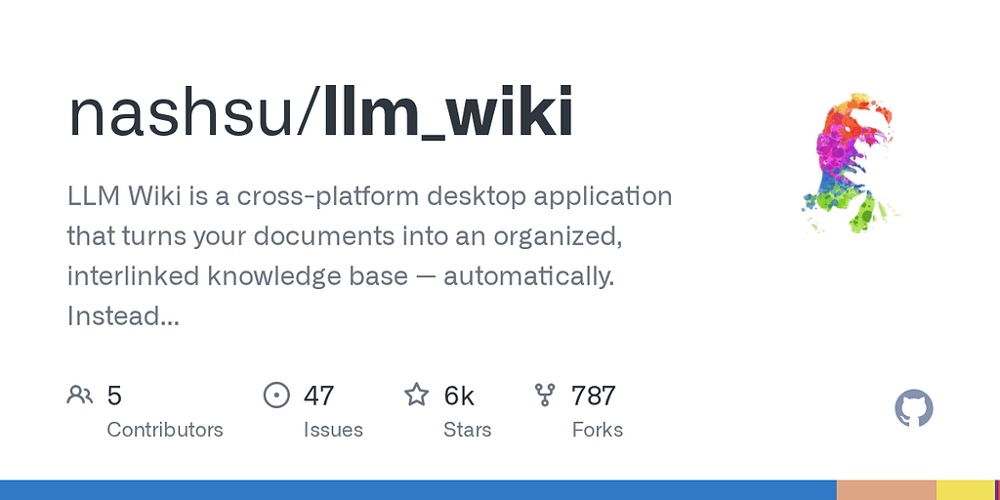
RAG 기반 지식 관리는 질문할 때마다 원본 문서에서 처음부터 검색하여 같은 추론을 반복하고 토큰을 낭비하며, 문서 간 관계와 모순을 파악하기 어렵다는 문제가 있다. LLM Wiki는 LLM이 점진적으로 위키 페이지를 구축하고 유지보수하는 패턴을 구현한 오픈소스 데스크톱 애플리케이션으로, 새 자료가 들어올 때만 Two-Step Chain-of-Thought 인제스트를 통해 위키를 업데이트한다. 지식 그래프와 4-Signal Relevance Model로 문서 간 관계를 명확히 표현하고, Louvain 커뮤니티 탐지로 자연스러운 클러스터를 드러낸다.
핵심 포인트: 핵심 기여: Tauri + Rust 백엔드와 React 19 프런트엔드로 외부 서비스 의존성을 최소화한 크로스플랫폼 데스크톱 앱 구현, Chrome 웹 클리퍼와 Obsidian 호환성으로 기존 워크플로우와의 자연스러운 통합 지원.
🔗 discuss.pytorch.kr/t/llm-wiki-feat-karpat…
GitHub
Obsidian + LLM + Git + Quartz — 개인 지식을 공개 자산으로 변환하는 4+1 스택
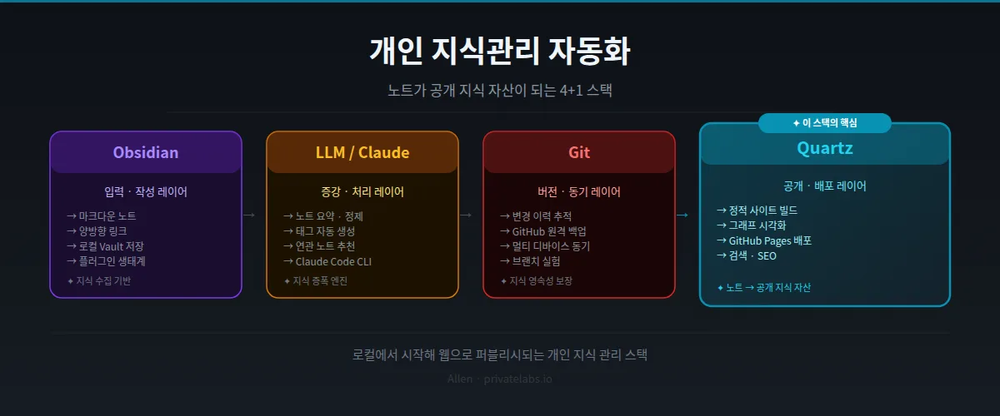
개인이 축적한 지식이 컴퓨터 내부에만 갇혀 있는 문제를 해결하는 통합 파이프라인. Obsidian에서 평문 마크다운으로 작성한 노트를 Claude Code로 구조화하고, Git으로 버전관리한 후, Quartz가 정적 웹사이트로 자동 변환하여 선택적으로 공개한다. 각 단계가 다음 단계의 조건이 되는 순환 구조로, 추가 포맷 변환이나 플랫폼 이식 없이 vault의 위키링크와 폴더 구조를 그대로 웹에 배포할 수 있다.
핵심 포인트: 핵심 기여: 나만 보는 개인 메모에서 세상과 공유하는 살아있는 지식 기반으로의 전환을 자동화하며, 복사-붙여넣기 마찰을 제거하여 지식 자산의 복리적 증가를 실현한다.
🔗 wikidocs.net/blog/@Allen/20309/
기타 (Others)
AI & RESEARCH
Qwen-AgentWorld: 가상 환경에서 훈련한 AI가 실제 인터넷보다 성능 우수
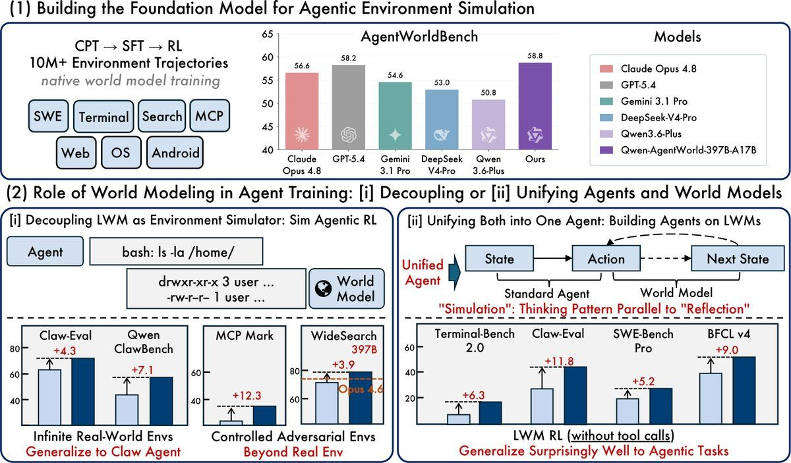
AI 에이전트 훈련 시 실제 인터넷 환경의 느린 속도와 높은 비용이 학습 효율을 제한하는 문제를 해결하기 위해, Qwen이 MCP, 웹, 터미널, 안드로이드 등 7개 환경을 시뮬레이션하는 월드 모델 Qwen-AgentWorld를 공개했다. 가상 환경에서 에이전트가 활동할 환경 자체를 학습시키는 방식으로, 실제 검색엔진에 연결해 훈련한 에이전트보다 더 높은 성능을 달성했으며, Claude Opus 4.8과 GPT-5.4를 벤치마크에서 초과 성능을 보였다.
핵심 포인트: 핵심 성과: 환경의 다음 상태 예측 훈련만으로 에이전트 학습 없이도 멀티턴 도구 호출 같은 실제 에이전트 성능이 향상되었으며, 자체 벤치마크에서 Claude Opus 4.8과 GPT-5.4를 능가했다.
🔗 threads.com/@choi.openai/post/DZ-Q8KlgElo…
기타 (Others)
Mistral OCR 4 — 170개 언어 지원하는 로컬 배포형 고성능 OCR 모델
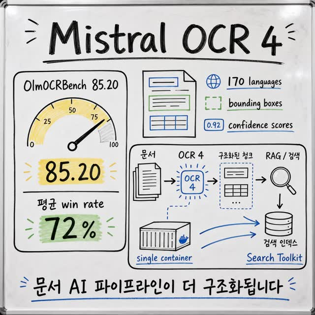
사내 문서 유출 우려로 인해 클라우드 기반 OCR 솔루션 사용을 꺼리는 기업들을 위해 미스트랄이 OCR 4를 출시했다. 단일 컨테이너에서 로컬 환경으로 구동되며 170개 언어를 지원하고, 바운딩 박스, 블록 분류, 신뢰도 점수를 함께 추출한다. 독립 검증자들이 600개 이상의 실제 문서로 테스트한 결과 기존 OCR 및 문서 AI 시스템 대비 평균 72% 선호도를 기록했으며, OlmOCRBench에서 85.20점의 최고 점수를 달성했다.
핵심 포인트: 핵심 성과: 독립 검증자 평가에서 기존 모든 OCR 및 문서 AI 시스템 대비 평균 72% 선호도 달성, OlmOCRBench 85.20점 최고 점수 기록, 170개 언어 지원 및 단일 컨테이너 로컬 배포 지원으로 사내 AI 파이프라인 및 RAG 시스템 구축에 최적화.
기타 (Others)
PixelRAG — 웹페이지 텍스트 추출 대신 스크린샷으로 정보 검색
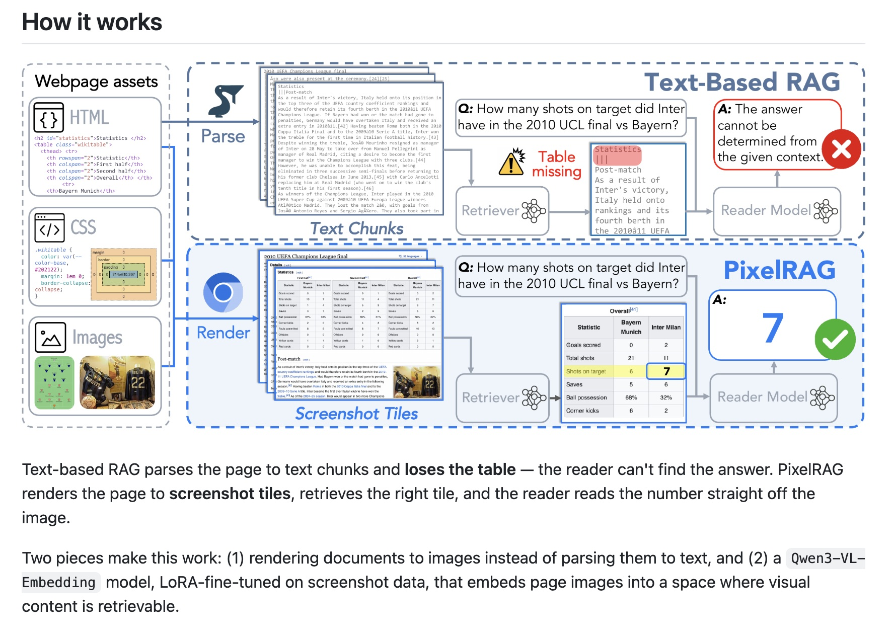
기존 RAG 시스템은 웹페이지를 텍스트로 변환하는 과정에서 표, 차트, 레이아웃 정보를 손실한다. PixelRAG는 웹페이지를 스크린샷으로 캡처한 후 비전 모델을 통해 이미지에서 직접 정보를 추출하는 방식으로 이 문제를 해결한다. 텍스트 변환 단계를 제거함으로써 시각적 정보를 온전히 보존하고, 사용자 질문에 대해 이미지에서 직접 답을 읽어낸다.
핵심 포인트: 핵심 기여: 텍스트 기반 RAG 대비 표 검색 정확도 향상(인터 밀란 슈포트 온타겟 7개 정확 추출), UC Berkeley에서 발표한 논문과 오픈소스 프로젝트로 웹 정보 검색 방식의 패러다임 전환 제시.
🔗 github.com/StarTrail-org/PixelRAG
GitHub
Inference-Free SPLADE — 신경망 검색을 13배 빠르게
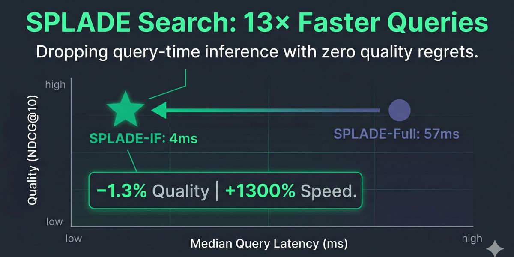
기존 SPLADE는 쿼리 시점에 신경망 추론을 수행하여 지연 시간이 길다는 문제가 있다. Inference-Free SPLADE는 모든 의미 확장 처리를 인덱싱 단계에서 사전 완료하여 쿼리 타임 지연을 획기적으로 단축한다. 응답 속도는 57ms에서 4.3ms로 단축되며 기존 대비 검색 품질 저하는 거의 없다.
핵심 포인트: 핵심 성과: 쿼리 응답 속도 13배 향상(57ms → 4.3ms), 검색 품질 유지 동시 달성으로 렉시컬 검색(BM25)의 정확성과 신경망 기반 의미 검색의 속도를 결합.
🔗 kshivendu.dev/blog/if-splade
기타 (Others)
DEVTOOLS & OPEN SOURCE
Insane Search — AI 에이전트용 자동화 최적화 브라우저
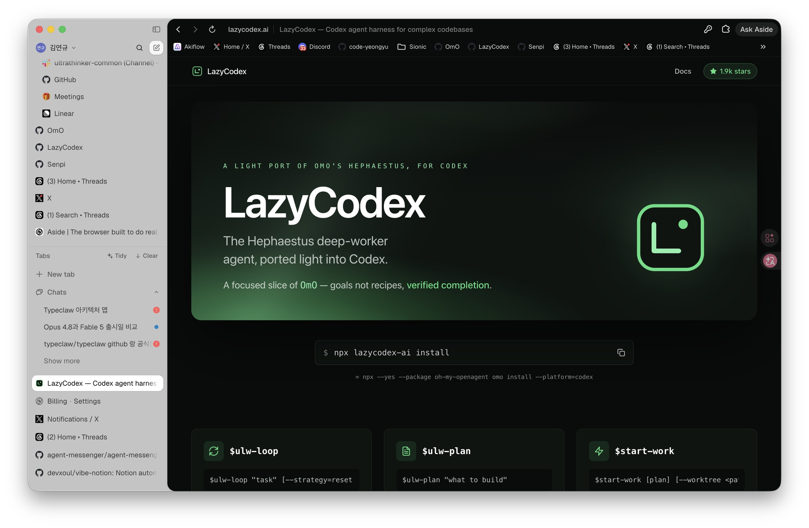
기존 브라우저를 사용한 AI 에이전트 자동화 시 발생하는 캡챠 차단, 화면 감지, 자동화 탐지 등의 문제를 해결하는 브라우저. Chrome을 포크하여 재구성하였으며, 브라우저 자동화 탐지 우회, 캡챠 통과, 화면 렌더링 안정성 등을 기본으로 구현하고 LazyCodx, OmO 등 기존 코딩 에이전트와 MCP를 통해 연결 가능하다. 프라이빗 베타 테스트 결과 깊이 있는 리서치 기능인 ultrabrowse 기능도 제공한다.
핵심 포인트: 핵심 기여: Chrome 포크 기반으로 브라우저 자동화 탐지 완전 차단, 캡챠 우회, 에이전트 화면 인식 오류 근본적 해결 및 기존 코딩 에이전트와의 완벽한 호환성 제공.
🔗 threads.com/@yeon.gyu.kim/post/DZ8yPAwEoq…
기타 (Others)
cmux-iphone — Mac의 AI 코딩 세션을 iPhone에서 원격 제어
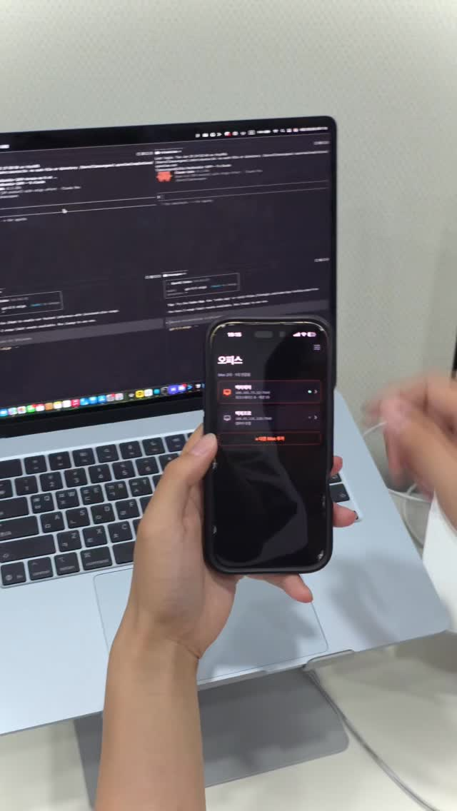
개발자가 Claude Code, Codex 등의 AI 코딩 세션을 실행 중인 Mac에서 벗어나지 못하는 문제를 해결하는 오픈소스 앱. iPhone과 Apple Watch에서 실시간 터미널 출력을 확인하고 새로운 프롬프트를 전송하며 권한 요청에 응답할 수 있도록 지원한다. Tailscale 또는 LAN을 통해 연결되며, 클라우드 서버 없이 로컬 기기에서만 작동하므로 프라이버시를 보장한다.
핵심 포인트: 핵심 기여: 밥먹을 때, 이동 중에도 iPhone으로 Mac의 AI 코딩 작업을 모니터링하고 제어 가능하며, 여러 프로젝트를 동시에 관리할 때 특히 유용하게 설계됨.
🔗 github.com/lim-won/cmux-iphone
기타 (Others)
Leve — 디렉토리 기반 지속 가능한 에이전트 프레임워크
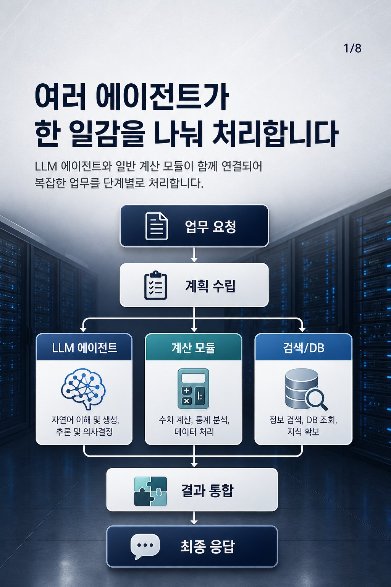
LLM 에이전트 구현 시 평가와 디버깅의 복잡성 문제를 해결하기 위해 설계된 프레임워크. 파일시스템 기반 구조로 에이전트를 디렉토리로 정의하고 LangGraph로 컴파일하여 LangSmith를 통해 검증하는 구조를 제공한다. 멀티턴 및 장기 태스크를 수행하는 프로덕션급 에이전트에 승인, 서브에이전트, 샌드박스 실행, 보안 제어 등의 기능을 기본 제공한다.
핵심 포인트: 핵심 기여: 파일 규칙에 따라 도구, 스킬, 서브에이전트가 자동 발견되어 학습 곡선을 최소화하고, 동일한 에이전트 디렉토리가 로컬에서 프로덕션까지 변경 없이 실행되는 일관성 제공.
🔗 github.com/prasanjit101/Leve
기타 (Others)
Loop Library — AI 에이전트 워크플로우용 50개 이상 실무 템플릿 오픈소스

AI 에이전트 기반 워크플로우 구축 시 반복적으로 설계하는 Loop 구조를 매번 새로 만들어야 하는 문제를 해결하는 오픈소스. Loop Library는 엔지니어링, 운영, 평가, 설계, 콘텐츠 제작 등 실제 업무 시나리오를 위한 50개 이상의 검증된 Loop 템플릿을 제공하며, 각 Loop에는 피드백과 판단, 반복 과정이 구조화되어 있다. AI에게 작업을 설명하면 적절한 Loop를 추천받거나 기존 템플릿을 수정해 사용할 수 있으며, Skill 없이도 템플릿만 복사해 즉시 적용 가능하다.
핵심 포인트: 핵심 기여: 50개 이상의 실무 기반 Loop 템플릿 카탈로그 제공, 검색·감사·적응·설계 기능을 수행하는 AI Skill 탑재, Loop와 Skill 분리 구조로 템플릿 단독 사용 가능
🔗 github.com/Forward-Future/loop-library
GitHub
Loop Library — AI 에이전트 반복 작업을 위한 44개 루프 모음
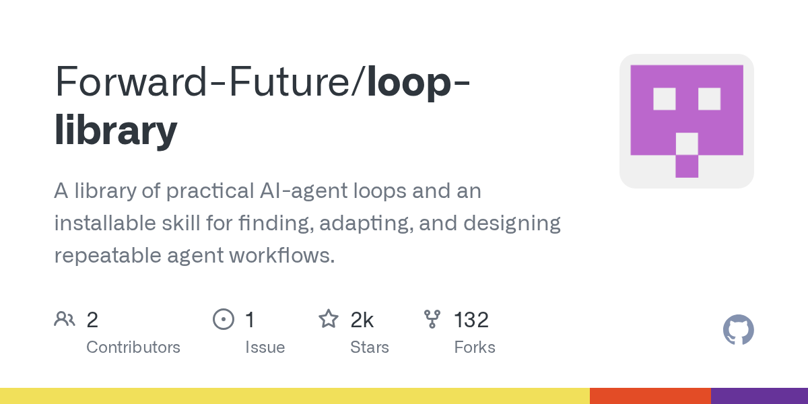
AI 에이전트에게 단순히 작업을 지시하면 대부분 실패하는 문제를 해결하기 위해 Forward Future가 공개한 Loop Library는 확인-수정-재검증-멈춤 조건의 반복 구조를 담은 프롬프트 모음집이다. 44개의 에이전트 루프는 Engineering, Evaluation, Operations, Content, Design 등 카테고리별로 정리되어 있으며, 각 루프는 checks와 stopping conditions를 포함해 에이전트가 ‘된 것 같음’에서 멈추지 않도록 설계되었다.
핵심 포인트: 핵심 기여: 문서 정리, 제품 평가, 프로덕션 에러 점검, SEO 개선, 테스트 최적화, 리팩터링 등 44개 실제 업무 루프를 카테고리별로 제공하며, 모든 루프에 검증 체크포인트와 명확한 종료 조건을 포함해 AI 에이전트 시대의 생산성을 프롬프트 문장력이 아닌 반복 프로토콜 설계에서 확보할 수 있게 한다.
🔗 github.com/Forward-Future/loop-library
기타 (Others)
Apify MCP 커넥터 — AI 에이전트 데이터를 Notion·Slack으로 안전 연결
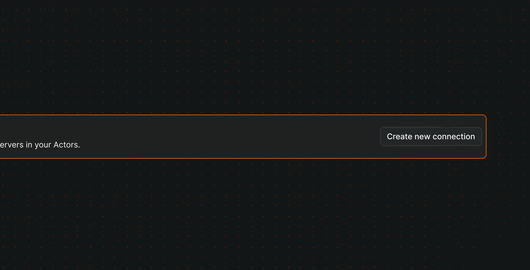
AI 에이전트가 수집한 데이터를 외부 서비스로 전송할 때 자격 증명이 코드에 노출되는 보안 문제가 발생한다. Apify의 새로운 MCP 커넥터는 Model Context Protocol을 기반으로 Notion, Slack, GitHub, Sentry, Supabase 등 외부 서비스와의 연결을 중개하며, 사용자 자격 증명을 서버 측에서 관리하고 Actor는 Apify 런 토큰으로만 인증하도록 함으로써 보안을 보장한다. 이를 통해 데이터 수집부터 실제 업무 파이프라인까지 자동화 흐름을 완성할 수 있다.
핵심 포인트: 핵심 기여: MCP 커넥터 기반 서버 측 자격 증명 관리로 코드 노출 없이 안전한 외부 서비스 연동 구현, Apify의 데이터 수집 플랫폼을 실무 자동화 워크플로우로 확장.
기타 (Others)
token-router — 로컬 AI로 클라우드 LLM 토큰 비용 99% 절감
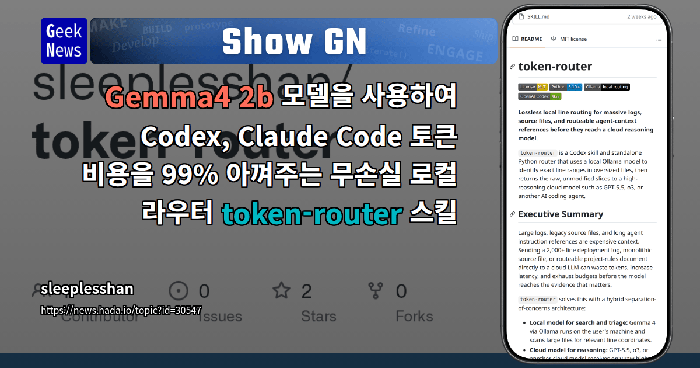
대용량 로그나 레거시 코드를 클라우드 LLM에 직접 전송할 때 발생하는 토큰 낭비와 지연 시간 문제를 해결하는 하이브리드 라우터. 로컬 머신의 Ollama 기반 Gemma 4 2B 모델로 필요한 라인 번호를 찾아내고, 원문 조각만 클라우드 모델로 전송해 GPT-5.5나 o3 같은 고성능 추론 모델의 능력을 유지하면서 입력 토큰을 획기적으로 줄인다.
핵심 포인트: 핵심 성과: 2,000줄 인프라 로그에서 41,711 토큰을 131 토큰으로 감소(99.69% 절감), 2,155줄 소스코드에서 7,520 토큰을 70 토큰으로 압축(99.06% 절감)하면서 처리 시간은 4~5초 이내.
GitHub
Flashtype — AI 수정사항을 라인별로 검토하는 마크다운 에디터
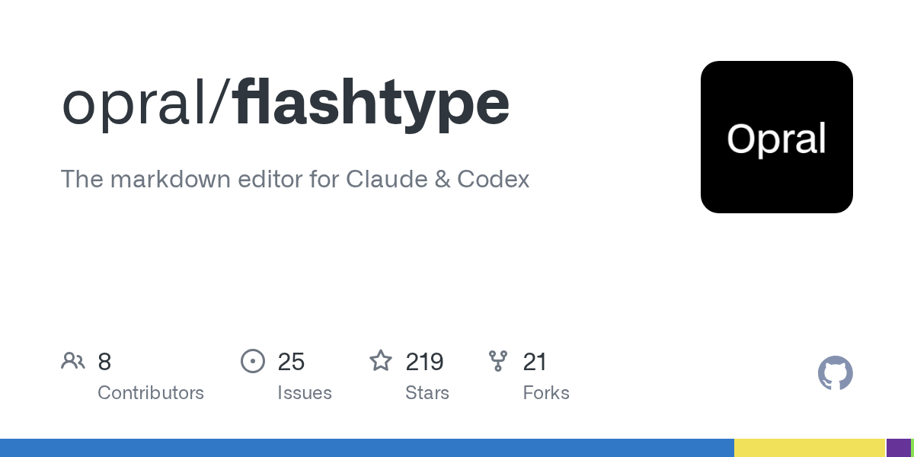
AI가 문서를 수정할 때 요청하지 않은 부분까지 변경하고 전체를 반환하는 문제를 해결하는 브라우저 기반 마크다운 에디터. Flashtype은 Claude나 Codex 같은 AI 에이전트가 수정한 모든 변경사항을 라인별 diff로 표시하고, 사용자가 각 수정사항을 개별적으로 수락하거나 거절할 수 있도록 한다. 로컬 파일 저장, 버전 관리, 오프라인 지원 등을 제공하며 무료 오픈소스로 제공된다.
핵심 포인트: 핵심 기여: 코드 리뷰의 diff 방식을 문서 편집에 적용하여 AI 수정사항을 라인 단위로 선별 가능하게 하고, 설치 없이 브라우저에서 즉시 사용 가능한 MIT 라이선스 오픈소스 도구로 제공
GitHub
Trellis — AI 코딩 도구 설정 통합 플랫폼
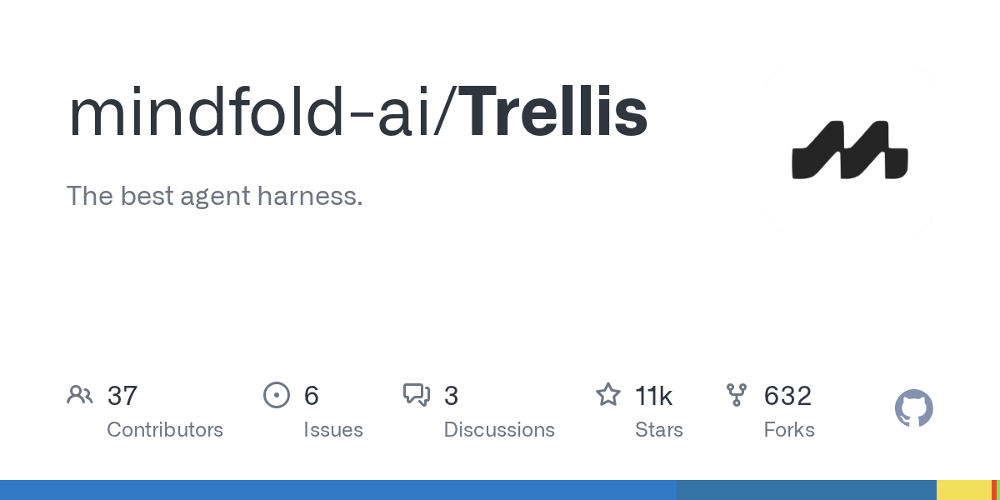
AI 코딩 툴마다 서로 다른 설정 파일(.cursorrules, CLAUDE.md 등)을 관리하는 문제를 해결하는 통합 프레임워크. Trellis는 한 번의 규칙 작성으로 Cursor, Claude 등 14개 플랫폼에 자동으로 컨텍스트를 주입하고 프로젝트 히스토리를 기억하며, 엔지니어링 표준에 맞는 AI 에이전트 작업 환경을 제공한다.
핵심 포인트: 핵심 성과: 단일 설정 파일로 14개 플랫폼 자동 컨텍스트 주입, 프로젝트 규칙과 히스토리 지속 유지로 파편화된 AI 개발 환경 세팅 문제 해결.
🔗 github.com/mindfold-ai/Trellis
GitHub
Claude Code — AI 지시 입력의 7가지 방법과 선택 기준

Claude Code 사용 시 AI에게 지시를 내리는 방식이 단순 부탁으로만 작동해 복잡한 작업에서 무시될 수 있다는 문제를 해결한다. Anthropic이 공식 문서를 통해 공개한 7가지 지시 입력 방법(CLAUDE.md, 규칙, 스킬, 서브에이전트, 훅, 출력 스타일, 시스템 프롬프트)을 소개하며, 각 방법이 로드 시점, 지속성, 권한 수준에서 다르다는 점을 설명한다. 토큰 비용과 강제력 여부의 두 기준으로 상황에 맞는 방법을 선택할 수 있다.
핵심 포인트: 핵심 기여: Claude Code의 7가지 지시 입력 방법 각각이 컨텍스트 로드 시점(세션 시작 vs 실제 사용 시), 토큰 비용(고정 vs 동적), 강제력(부탁 vs 강제) 측면에서 차별화되며, 이를 이해하면 장기 작업에서 지시 손실 없이 비용 효율적으로 AI를 제어할 수 있다.
🔗 claude.com/ko/blog/steering-claude-code-s…
기타 (Others)
Loop Library — AI 에이전트용 재사용 가능한 루프 프롬프트 라이브러리
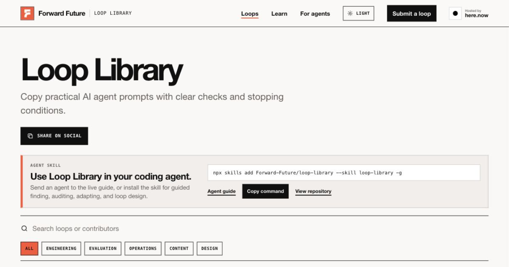
AI 에이전트에게 자율적으로 작업을 완료하도록 하는 루프 엔지니어링 과정에서 복잡한 시스템 구축, 높은 비용, 잦은 오류 문제가 발생한다. Loop Library는 69개 이상의 검증된 루프 프롬프트를 제공하여 명확한 종료 조건과 함께 즉시 사용 가능한 형태로 제공한다. 사용자는 에이전트를 위해 프롬프트 자체를 설계하는 방식으로 전환하여 무겁고 부서지기 쉬운 복잡한 아키텍처를 단순한 텍스트 기반 솔루션으로 대체할 수 있다.
핵심 포인트: 핵심 기여: 69개의 검증된 루프 프롬프트를 라이브러리로 제공하며, NPM 기반 스킬 설치로 에이전트가 기존 루프를 찾거나 새로운 루프를 처음부터 생성할 수 있도록 지원한다.
🔗 signals.forwardfuture.ai/loop-library/
기타 (Others)
Superpowers 6 — AI 코딩 에이전트 워크플로우 최적화로 속도 50% 단축, 비용 60% 절감
코딩 AI 에이전트가 더 강한 모델 없이도 결과 품질을 유지하면서 시간과 비용 효율성이 떨어지는 문제를 해결한 업데이트. Superpowers 6은 AI 에이전트들의 작업 방식을 재설계하여 검사 단계를 통합하고, 사전 정보 제공, 역할별 에이전트 배치 등을 통해 빌드 시간을 최대 50% 단축하고 토큰 소비를 최대 60% 감소시켰다. 모델 교체 없이 워크플로우 최적화만으로 성능 향상을 달성한 것이 핵심이다.
핵심 포인트: 핵심 성과: 동일한 코드 품질을 유지하면서 빌드 시간을 최대 50% 단축하고 토큰 비용을 최대 60% 절감. 더 강한 AI 모델로 업그레이드하지 않고 에이전트 간 협업 구조, 검사자 통합, 컨텍스트 사전 제공 등 워크플로우 최적화만으로 달성.
🔗 primeradiant.com/blog/2026/superpowers-6…
GitHub
PRODUCT & INDUSTRY
Claude Tag — Slack에서 AI를 팀원으로 활용하는 협업 기능
팀 협업 과정에서 AI 도구를 개별적으로 호출해야 하는 비효율성을 해결하기 위해 앤트로픽이 Claude Tag를 출시했다. Slack 채널에 Claude를 태그하면 AI가 팀 동료처럼 채널 맥락을 이해하고 작업을 단계별로 처리하며, 코드 작성, PR 생성, 데이터 분석, 장애 대응 등을 수행한다. 팀원들이 동일한 Claude를 공유하므로 작업 맥락이 유지되어 반복적인 배경 설명이 불필요하며, 관리자가 채널별 접근 권한과 도구 연결을 제어할 수 있다.
핵심 포인트: 핵심 성과: 앤트로픽 내부에서 제품팀 코드의 65%가 Claude를 통해 작성되고 있으며, Claude Enterprise와 Team 요금제 사용자를 대상으로 Slack 베타 버전 제공 중이다.
🔗 threads.com/@choi.openai/post/DZ8mdxygTXv…
기타 (Others)
Make Interfaces Feel Better — 인터페이스 완성도를 높이는 디자인 스킬
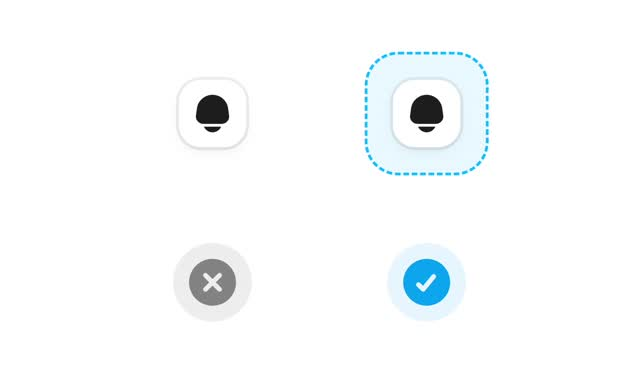
사용자 인터페이스 디자인에서 세부 사항의 부재로 인한 어색함과 낮은 완성도 문제를 해결하는 스킬. 자연스럽고 직관적인 인터페이스를 만들기 위한 구체적인 팁과 기법들을 제공하여 현재 진행 중인 프로젝트의 UI를 개선할 수 있도록 돕는다. Claude Code 기반의 에이전트 스킬로 제공되어 실제 프로젝트에 즉시 적용 가능하다.
핵심 포인트: 핵심 기여: 좋은 디자인의 보이지 않는 세부 요소들을 체계화하여 제시하고, 개인의 인터페이스 제작 경험에서 도출된 실용적인 디자인 팁들을 에이전트 스킬로 구현하여 누구나 적용할 수 있게 함.
🔗 jakub.kr/skills/make-interfaces-feel-bett…
기타 (Others)
OpenCrab: 건축 온톨로지 기반 설계 자동화 플랫폼
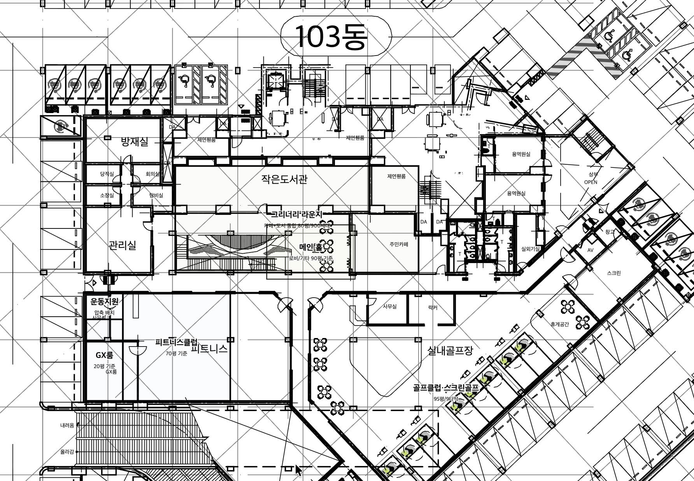
기존 건축 설계에서 공간 변경 시 법적 제약, 면적 산정, 기능 간 관계성을 수동으로 검토해야 하는 문제를 해결하기 위해 개발된 플랫폼. 3400만 줄의 코드로 6만 개 노드 기반 건축 온톨로지를 구축하고, 토폴로지 정의를 통해 계층 좌표, 기둥, 벽, 계단, 가구 등 모든 도면 요소를 디지털화했다. 토폴로지와 온톨로지의 관계성으로 공간 변경 대안 설계를 자동화하는 MCP 기반 그래프 검색 플랫폼이다.
핵심 포인트: 핵심 기여: 건축 도면 59,275개 청크에서 76,481개 노드와 209,167개 엣지를 갖는 온톨로지 그래프 구축으로 법적 제약과 기능 관계를 자동으로 검증하는 설계 자동화 실현.
🔗 threads.com/@alex_ai_mcp/post/DZ2BKUamW63…
기타 (Others)
ARD — AI 에이전트용 ‘DNS’ 발표, 오픈 생태계 구축
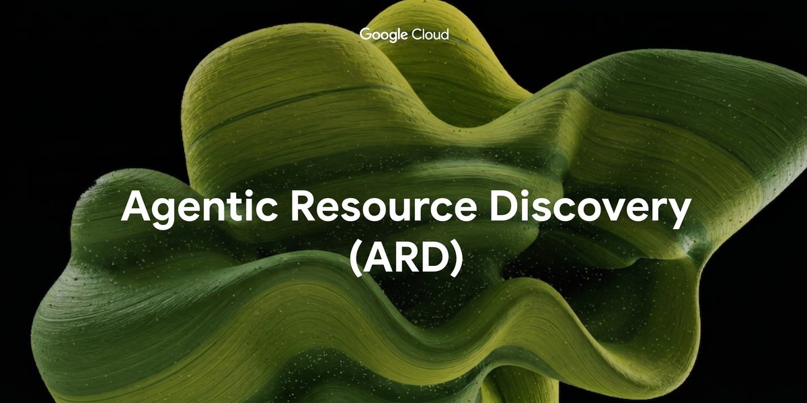
AI 에이전트들이 MCP로 통신은 가능해졌지만 서로를 발견하고 신뢰할 수 있는 메커니즘이 없었던 문제를 구글이 해결했다. ARD(Agentic Resource Discovery)는 조직 간 AI 도구를 안전하게 검색하고 연결해주는 개방형 표준으로, 중앙 통제 없이 에이전트가 스스로 외부 리소스를 신뢰성 있게 발견할 수 있는 생태계를 가능하게 한다.
핵심 포인트: 핵심 기여: ARD는 업계 파트너와 함께 개발한 개방형 규격으로, 프레임워크와 프로토콜 구분 없이 도구와 서비스를 안전하게 공유할 수 있는 표준화된 방식을 제시하며, 에이전트가 신뢰할 수 있는 외부 리소스를 자동 발견하는 인프라를 제공한다.
🔗 developers.googleblog.com/announcing-the…
블로그 (Blog)
HITL 에이전트 — 사출 수축률 추천의 RAG·가중 랭킹·학습 환류 패턴
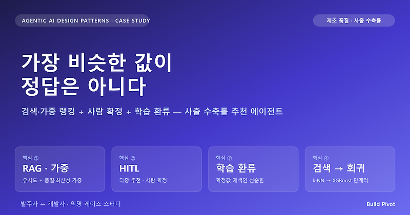
사출 성형 부품의 수축률 결정 시 단순 유사 검색만으로는 과거의 품질 이슈나 오래된 데이터를 그대로 채택하는 문제가 발생한다. 이 케이스는 RAG로 과거 이력을 검색하되, 품질 이슈와 최신성으로 가중 랭킹하여 순위를 보정하고, 여러 추천을 사람이 확정하며, 확정값을 다시 학습 데이터로 되먹이는 HITL 에이전트 구조를 제시한다. 자동 결정이 아닌 추천과 확정의 분리를 통해 AI는 후보와 근거를 제시하고 사람이 최종 판단하는 책임 있는 의사결정 구조를 실현한다.
핵심 포인트: 핵심 기여: RAG·가중 랭킹·HITL·학습 루프를 한 케이스에서 동시에 통합하여, 단순 유사도 기반 자동 채택의 한계를 극복하고 인간-AI 협업의 검증 가능한 패턴을 제시한다.
🔗 build-pivot.tistory.com/m/35
기타 (Others)
OpenAI Codex — 화면 녹화로 반복 작업을 AI 스킬로 자동화
AI 에이전트에게 작업을 시킬 때 복잡한 프롬프트 설명이 필요한 문제를 해결하기 위해 OpenAI가 Record & Replay 기능을 출시했다. 사용자가 Mac에서 작업을 한 번 시연하면 Codex가 그 과정을 관찰하여 재사용 가능한 스킬로 패키징한다. 이후 새로운 파일이나 날짜 범위만 지정하면 Codex가 학습한 스킬을 기반으로 동일한 작업을 자동으로 완료한다.
핵심 포인트: 핵심 기여: 프롬프트 기반 명령에서 시각적 시연 기반 학습으로 전환하여 UI 작업, 파일 처리, 반복 업무의 자동화 복잡도를 대폭 단순화했다.
🔗 developers.openai.com/codex/record-and-re…
기타 (Others)
Claude Code — 세션 작업을 실시간 공유 가능한 인터랙티브 페이지로 변환
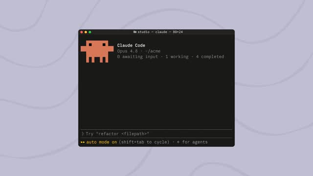
Claude Code 세션에서 진행 중인 작업을 PR 워크스루, 대시보드, 체크리스트 등 실시간 업데이트되는 대화형 웹페이지인 아티팩트로 변환할 수 없다는 문제를 해결한다. 아티팩트는 세션의 전체 컨텍스트(코드베이스, 플러그인, 연결된 도구)를 활용해 생성되며, 비공개 링크를 통해 팀과 공유하면 작업 진행에 따라 자동으로 최신 버전이 반영된다. Team 및 Enterprise 플랜에서 베타로 제공된다.
핵심 포인트: 핵심 기여: 진행 중인 코딩 작업을 라이브 시각화 아티팩트로 자동 생성하여 팀 협업을 실시간화하고, 조직 내 비공개 공유로 보안을 보장하며 PR 검토, 대시보드 구축, 문서화 등 다양한 사용 사례를 지원한다.
🔗 claude.com/blog/artifacts-in-claude-code
기타 (Others)
Claude Design — 디자인 시스템 기반 AI 화면 생성
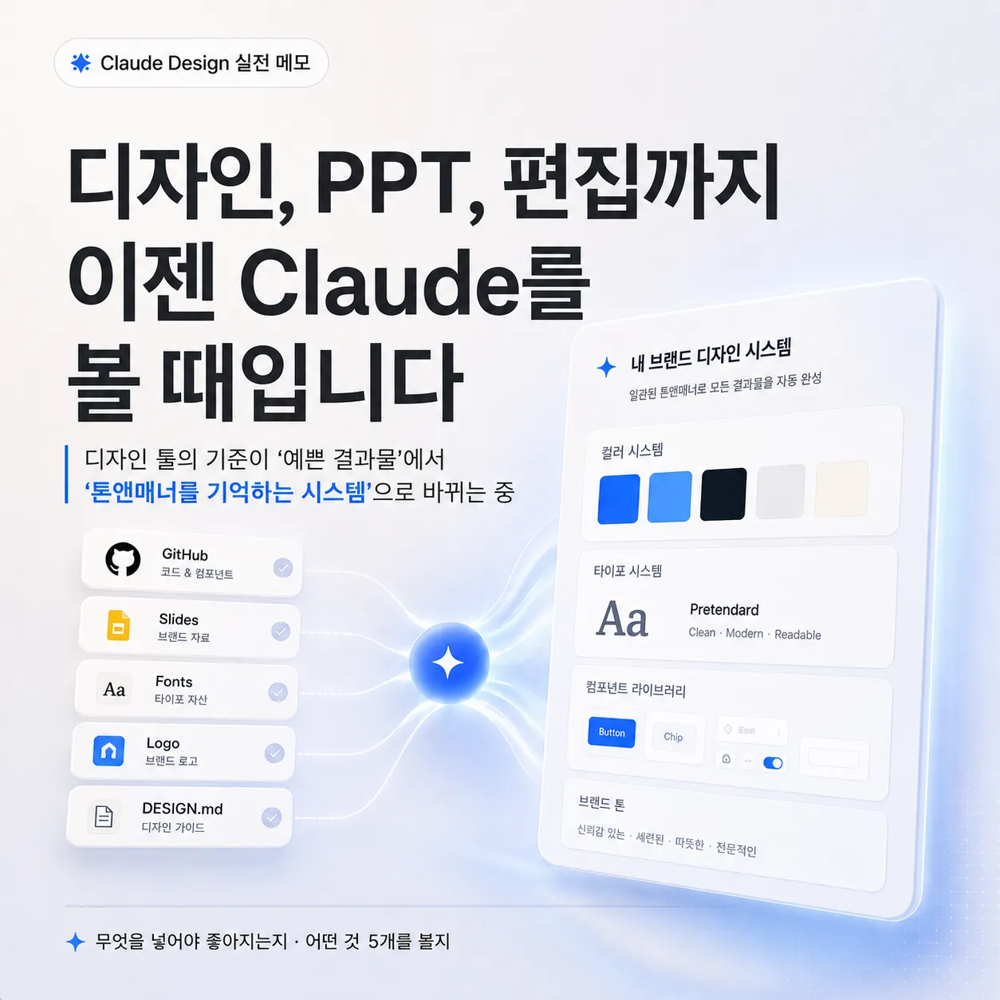
AI가 생성한 디자인이 실제 서비스와 맞지 않는 문제를 해결하는 Claude Design의 업데이트. GitHub, 디자인 파일, 코드베이스에서 디자인 시스템을 직접 읽어와 실제 컴포넌트로 화면을 구성하고, 출력 전 자체 검증을 수행한다. Claude Code와의 양방향 연동으로 디자인과 코드의 반복 작업을 하나의 루프로 통합하며, 터미널 한 줄의 명령어로 컴포넌트 동기화가 가능하고 토큰 사용량도 대폭 감소했다.
핵심 포인트: 핵심 성과: 100만 명 이상이 첫 주에 사용했으며, 평균 토큰 사용량을 줄이고 에러율을 크게 낮춤. 베타 버전에서 모든 유료 플랜(Pro, Max, Team, Enterprise)을 지원하며, PDF, PowerPoint 내보내기 및 Canva, Vercel 등 기존 도구와의 연동 지원.
🔗 claude.com/blog/claude-design-stays-on-br…
기타 (Others)